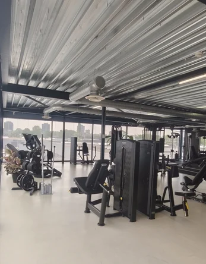

1-op-1 begeleiding met een vaste coach in Leiderdorp. Jouw schema, jouw tempo, jouw doel — met techniekcheck op elke herhaling en voedingsbegeleiding via de app. Vier sessies van 60 min per 4 weken.
Personal training werkt het best als je serieus resultaat wil — en daar volledige aandacht voor wil hebben.
De meest gehoorde drempels — en hoe we ze concreet wegnemen bij Fit Up Leiderdorp.
Vier stappen, geen verkooppraatje. We meten, sturen bij en kijken eerlijk of dit traject bij jou past.
Fit Up zit aan de Weversbaan 9 in Leiderdorp — pal aan de N446 en de A4. Goed bereikbaar vanuit Leiden, Oegstgeest, Voorschoten en Zoeterwoude. Geen parkeergedoe, geen drukte.

Plan een gratis intake — vrijblijvend, eerlijk advies. Of stuur direct een appje, dan praten we even kort door.